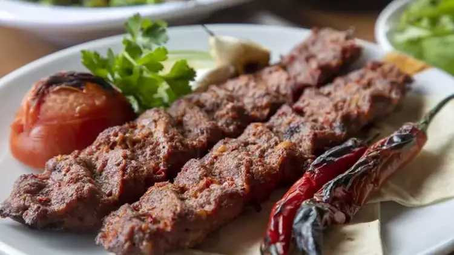
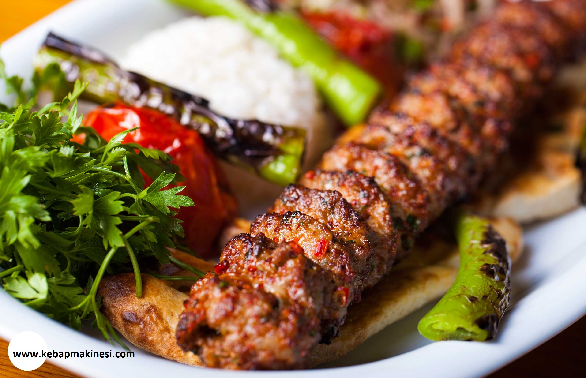
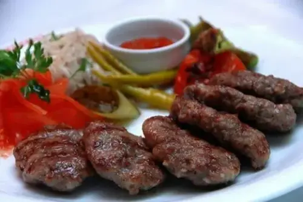
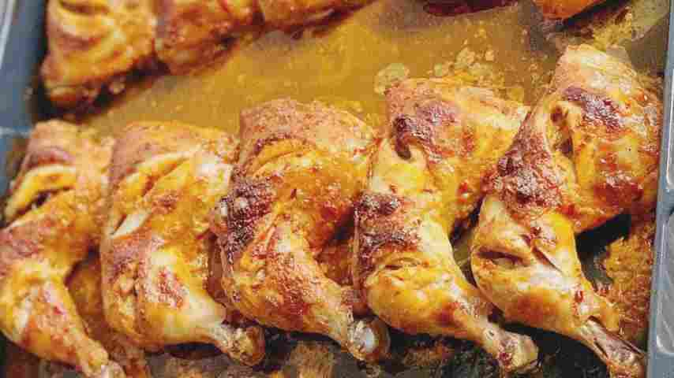
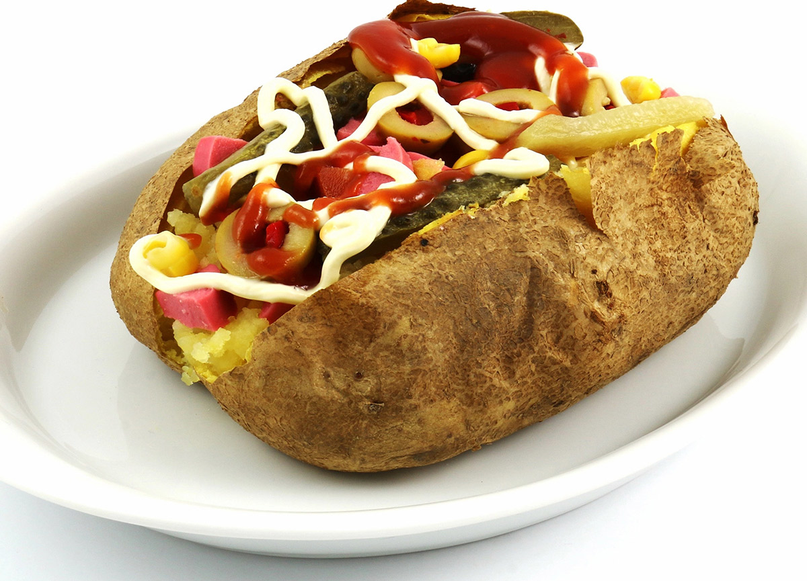
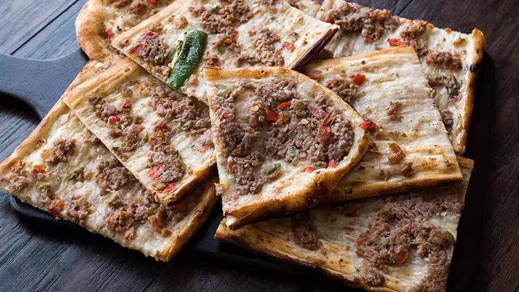

Türkiye'nin En Popüler Yöresel Lezzetlerini Keşfedin!
Türkiye, tarih boyunca farklı kültürlerin ve medeniyetlerin buluşma
noktası olmuştur ve bu zengin kültürel çeşitlilik, mutfaklara da
yansımıştır. Her bölge, kendine özgü tatlar, malzemeler ve pişirme
yöntemleriyle kendini tanıtır.
Güneydoğu Anadolu’nun acılı kebapları ve etli yemekleri, Akdeniz’in
zeytinyağlıları ve taze otları, Ege Bölgesi’nin hafif mezeleri ve
deniz ürünleri, Karadeniz’in mısır ekmeği ve tereyağlı lezzetleri,
Marmara’nın zengin tatlıları ve daha birçok yöresel tarif, Türk
mutfağını dünya çapında ün kazandırmıştır.
Yöresel lezzetler, sadece birer yemek değil, aynı zamanda her birinin
arkasında bir tarih, gelenek ve kültür barındırır. Bu yemekler,
ailelerin bir araya geldiği, sevdiklerinizle paylaşılan anıların
önemli bir parçasıdır. Türkiye'nin dört bir yanındaki en popüler ve
sevilen yöresel yemekler, sofralarınızı şenlendirirken, farklı tatları
keşfetmeniz için de size eşsiz bir fırsat sunuyor.
Trendler sayfamızda, en çok tercih edilen ve günümüzde tekrar
popülerlik kazanan yöresel yemekleri bulabilirsiniz. Bu tariflerle hem
geleneksel mutfağınızı yaşatabilir hem de misafirlerinize benzersiz
bir lezzet deneyimi sunabilirsiniz. Türk mutfağının zenginliğini
keşfedin ve mutfakta harikalar yaratın!
Türkiye'nin En Çok Tercih Edilen Yöresel Yemekleri
Bölge
Yemek Adı
Özellikler
Güneydoğu Anadolu
Kebap
Acılı ve etli yemekler, özellikle Adana Kebabı ve Urfa Kebabı.
Ege
Zeytinyağlı Enginar
Özellikle zeytinyağlı yemeklerin yaygın olduğu Ege mutfağında,
enginar oldukça popülerdir.
Karadeniz
Akçaabat Köftesi
Karadeniz mutfağına özgü olan bu köfte, ince ve nefis bir lezzet
sunar.
Akdeniz
Fırın Tavuk
Akdeniz mutfağı, taze malzemelerle yapılan fırın tavuk yemekleriyle
meşhurdur.
Marmara
Kumpir
Patatesin içi doldurulup fırınlanarak yapılan bu lezzet, İstanbul'da
çok popülerdir.
İç Anadolu
Etli Ekmek
Konya mutfağına özgü olan etli ekmek, ince hamur üzerine etle
yapılan bir çeşit pide türüdür.
Doğu Anadolu
Kavurma
Soğuk kış aylarında tercih edilen bu yemek, koyun etiyle yapılır ve
uzun süre pişirilir.
Adana Kebabı
Adana kebabı, Türkiye'nin Adana iline ait, özellikle baharatlı ve kuzu
etinden yapılan ünlü bir kebap çeşididir. Tarihi, Osmanlı İmparatorluğu
dönemine kadar uzanır ve Adana'da köylerden kente göç eden insanlarla
birlikte popülerleşmiştir. Geleneksel olarak, kuzu etinin dövülüp ince
ince doğranarak yoğrulmasıyla hazırlanan harç, şişlere sarılarak
mangalda pişirilir. İçeriğinde genellikle kuzu eti, baharatlar
(özellikle pul biber, kararbiber ve kimyon) ve soğan bulunur. Kebabın
özel lezzeti, etin pişirilme şekli ve kullanılan baharatlardan gelir.
Yanında genellikle lavaş, sumaklı soğan ve yeşillikler ile servis
edilir.
Malzemeler
500 gr kıyma
1 adet soğan
100 gr kuyruk yağı ya da iki yemek kaşığı tereyağ
2 diş sarımsak
1 Adet kapya biber
1 çay kaşığı biber salçası
Tuz, karabiber, isteğe bağlı pul biber de koyabilirsiniz
Lavaş İçin
2 Su bardağı ılık Su
3 yemek kaşığı yoğurt
2 yemek kaşığı zeytinyağı ya da sıvı yağ
1 paket instant maya
1 tatlı kaşığı tuz
1 tatlı kaşığı şeker
Aldığı kadar un 4 bardak belki biraz daha fazlası kontrollü
ekleyin
Tarif
İlk olarak soğanı ve kapya biberi rondodan geçirin ya da ince
ince doğrayın.
Suyunu iyice sıkın. Kıymanın içerisine ekleyin.
Tuz ve karabiberi de ekleyip güzelce yoğuralım ve dinlenmesi
için dolaba kaldıralım.
Bu sıra da lavaş için un hariç bütün malzemeleri derin bir kap
içerisine alalım.
Unu kontrollü ekleyip kıvamlı bir hamur yoğuralım yarım saat
kadar mayalansın.
Mayalanan hamuru 10-12 eşit parçaya bölelim.
Her bir parçayı yuvarlak açıp tava da arkalı önlü pişirelim.
Pişen lavaşları bir bez ya da örtüyle güzelce saralım.
Dinlenen kıymayı yumruk büyüklüğünde parçalar alıp şişe
geçirelim. Şiş yoksa tahta çubuklara geçirelim.
Kebap şeklini verip döküm tava da yada normal tava da pişirelim.
Lavaş ekmeği arasında domates, biber soğanla servis edelim.
Deneyenlere afiyet olsun
Yemek Fotoğrafı

Yemek Videosu
Urfa Kebabı
Urfa kebabı, Türkiye'nin Şanlıurfa iline özgü, kuzu eti ve baharatlarla
hazırlanan bir kebap çeşididir. Tarihi, Urfa'nın geleneksel mutfağına
dayanır ve özellikle Şanlıurfa'da mangalda pişirilerek tüketilir. Urfa
kebabı, Adana kebabından farklı olarak daha az baharatlıdır; genellikle
kuzu eti, soğan, sarımsak, tuz, kararbiber ve pul biber kullanılır,
ancak acı pul biber yerine tatlı pul biber tercih edilir. Etin, şişe
geçirilmeden önce elle yoğrulup karıştırılması, kebaba özel bir dokunuş
katar. Pişirilirken etin üzeri hafifçe kızarır ve yumuşak bir dokuya
sahip olur. Urfa kebabı, yanında lavaş ekmeği, sumaklı soğan ve
yeşillikler ile servis edilir.
Malzemeler
1 kilo az yağlı dana kıyma
50 gram çekilmiş kuyruk yağı
1 orta boy soğan rendesi
3 diş sarımsak rendesi
1 tepeleme tatlı kaşığı pul biber
1 çay kaşığı karabiber
Tuz
Közlemek İçin
10 adet salkım domates
10 adet çarliston biber
10 adet kebaplık soğan
Tarif
Kebaplık malzemeleri bir kabın içine alarak iyice yoğuruyoruz.
Ağzını streçleyerek dolapta birkaç saat dinlendiriyoruz.
Mandalinadan biraz daha büyük topaklar alarak hafif rulo yapıp
kebap şişini içine geçiriyoruz.
Elimizle hafif sıkarak şiş boyuna göre yerleştirip üzerini biraz
düzlüyoruz.
200 derece fırında yaklaşık 40 dakika kontrollü bir şekilde
pişiriyoruz.
(Pişirme süresini kendi fırınınıza göre de ayarlayabilirsiniz.)
Kebabın üst yüzeyi kızardığında alt üst ederek kebaplarımızın
diğer yüzeyinin de kızarmasını sağlıyoruz.
Pişen kebabımızı pide, közlenmiş sebze, soğan salatası ve içecek
eşliğinde servis ediyoruz.
Yemek Fotoğrafı

Yemek Videosu
Zeytinyağlı Enginar
Zeytinyağlı enginar, Türk mutfağının sevilen yemeklerinden biridir ve
zeytinyağı ile pişirilen enginarın ferahlatıcı ve sağlıklı lezzetini
sunar. Enginarın tarihçesi, MÖ 4. yüzyıla kadar uzanır ve ilk olarak
Antik Yunan'da yetiştirilmeye başlanmıştır. Zeytinyağlı enginarın
içerdiği enginar, yüksek antioksidan içeriği, sindirim sistemini
desteklemesi ve karaciğer sağlığına olan faydalarıyla bilinir. Ayrıca,
lif, C vitamini ve folat gibi besin öğeleriyle zengin olan bu yemek,
hafif ve besleyici bir alternatif olarak tercih edilir. Zeytinyağı ise
kalp sağlığına faydalı olan tekli doymamış yağ asitleri bakımından
zengindir.
Malzemeler
6 adet enginar (konserve de kullanabilirsiniz)
Yarım limon suyu (enginarları ovmak için)
1 adet havuç
1 adet patates
1 su bardağı bezelye (haşlanmış ya da konserve)
1 adet soğan
1 çay bardağı zeytinyağı
1 adet limon
1 çay kaşığı şeker
1,5 çay kaşığı tuz
1 su bardağı su
Tarif
Zeytinyağlı enginar için önce içini hazırlıyoruz. Havuç ve
patates minik küp şeklinde doğrayıp tencereye alalım, üzerini
geçecek kadar su ekleyerek 10 dakika kadar haşlanmaya bırakalım.
Burada sebzelerin tam pişmemesi önemli, hafif diri kalması
gerekiyor.
Sebzelerimiz piştikten sonra suyunu süzelim ve bir kenarda
bekletelim.
Ayrı bir tencereye bezelyelerimizi alalım, üzerine su ekleyerek
yumuşayıncaya kadar haşlayalım. Dilerseniz konserve bezelye de
kullanabilirsiniz. Haşlanan bezelyelerimizin de suyunu süzelim
ve bir kenarda bekletelim.
Soğanı yemeklik doğrayarak yarım çay bardağı zeytinyağında hafif
pembeleşene kadar kavuralım.
Üzerine patates ve havucu ekleyelim. Haşladığımız bezelyeyi de
ilave ederek 1-2 dakika karıştıralım ve ocaktan alalım.
Enginarlarımızı uygun bir kap içerisine alalım, yarım limon suyu
ile ovalım ve tencereye dizelim.
Orta kısımlarına hazırladığımız sebzelerden paylaştıralım. Kalan
garnitürü de enginarların üzerine paylaştıralım.
Üzerine zeytinyağı, limon suyu, şeker, tuz ve suyu ekleyerek
tencerenin kapağını kapatalım.
Yemeğimiz kaynayıncaya kadar orta ateşte, kaynadıktan sonra
kısık ateşte enginarlar yumuşayana kadar pişirelim. Bu süreç
yaklaşık 20-25 dakika sürecektir
Pişen enginarlarımızı ocaktan alalım ve soğumaya bırakalım.
Ardından servis tabağına alarak suyundan üzerine gezdirelim ve
servis edelim. Üzerini dereotu ile de süsleyebilirsiniz.Afiyet
olsun.
Yemek Fotoğrafı
Yemek Videosu
Akçaabat Köftesi
Akçabat köftesi, Karadeniz bölgesine özgü, özellikle Trabzon'un Akçabat
ilçesiyle özdeşleşmiş bir yemektir. Tarihçesi, kökenleri Osmanlı
İmparatorluğu'na kadar uzanan bu köfte, yerel halkın zengin et
ürünleriyle beslenmeye dayalı mutfak geleneğinden doğmuştur. Akçabat
köftesi, genellikle dana etinin kıyması, soğan, baharatlar (kimyon,
kararbiber, tuz) ve ince bulgurla yoğrularak hazırlanır. Yumuşak dokusu
ve yoğun lezzetiyle ünlü olan bu köfte, genellikle ızgarada pişirilir ve
yanında pilav ya da yoğurtla servis edilir. İçeriğindeki et ve
baharatlar, ona benzersiz bir tat verirken, aynı zamanda yüksek protein
ve vitamin kaynağıdır.
Malzemeler
1 buçuk kilo yağsız dana kıyma
300 gram çember yağı (iç yağ)
6-7 diş sarımsak
300 gram bayat ekmek
Yarım çay bardağı sade maden suyu
Tuz
Tarif
Kıyma ve yağı kıyma makinesinde çektiriyoruz. Ekmek ve
soyduğumuz sarımsakları kıymaya ekleyerek ikinci defa makinede
çektiriyoruz.
Malzememizi mermer bir tezgahın üzerinde 15 dakika kadar eze eze
yoğuruyoruz.
Tam kıvamına gelme aşamasında köftemizin yumuşak olması için
yarım çay bardağı sade maden suyu ekliyoruz. 2-3 dakika daha
böyle yoğurduktan sonra kıvama geldiğini anlamak için yoğurulan
malzemeden bir topak koparıyoruz.
Koparttığımız topak tel tel olmuş ise harcımız kıvama gelmiş
demektir. Bir kasenin içine bir miktar su alarak elimizi hafif
ıslatıp harcımızdan avuç içini dolduracak kadar büyüklükte
topaklar alıyoruz. Elimizde hafif yuvarlayıp yassıltıyoruz. Çok
ince ya da çok kalın olmayan köfteler elde ediyoruz. Harcımızdan
yaklaşık 50 adet köfte elde edebilirsiniz.
Köftelerimizi birkaç saat önce yapıp streçleyerek dolapta
dinlendiriyoruz.
Daha sonra tava ya da fırında değil özellikle mangalda yakmadan
kontrollü bir şekilde pişirerek aslına uygun bir Akçabat Köftesi
elde ediyoruz. Pişen köftelerimizi servis ediyoruz. Bu tarifimiz
aslına uygun şekilde, ustasından alınmış bir tariftir. Trabzonun
Akçabat ilçesine aittir. Bir Karadenizli olarak mutlaka
denemenizi tavsiye ederim muhteşem bir lezzet. Deneyeceklere
kolay gelsin.
Yemek Fotoğrafı

Yemek Videosu
Fırın Tavuk
Fırın tavuk yemeği, dünya mutfaklarında yaygın olarak bilinen ve tercih
edilen bir yemektir. Tarihçesi, tavuk yetiştiriciliğinin antik çağlara
dayandığı dönemlere kadar uzanır. Fırında pişirme tekniği, özellikle
Orta Çağ'dan sonra, yemeklerin daha pratik bir şekilde pişirilmesi
amacıyla gelişmiştir. Fırın tavuk, tavuk etinin baharatlar, sebzeler ve
zeytinyağı gibi malzemelerle harmanlanıp, düşük ısıda uzun süre
pişirilmesiyle hazırlanır. İçeriğinde genellikle tavuk, patates, soğan,
sarımsak, biberiye, kekik ve tuz gibi doğal baharatlar bulunur.
Fırınlama işlemi, tavuğun dışını çıtır, içini ise yumuşak ve lezzetli
hale getirir, aynı zamanda besin değerini korur. Fırın tavuk, yüksek
protein içeriği ve vitaminler bakımından dengeli bir yemek olarak
bilinir.
Malzemeler
9 Adet tavuk baget
Sosu İçin
1 yemek kaşığı domates salçası
1 tatlı kaşığı biber salçası
Yarım çay bardağı zeytinyağı
1 yemek kaşığı sirke
3 yemek kaşığı yoğurt
2 diş sarımsak
1 adet orta boy soğan
1 tatlı kaşığı kekik
1 çay kaşığı kimyon
1 tatlı kaşığı tatlı kırmızı toz biber
Karabiber
Tuz
Tamamlayıcıları
4 adet orta boy patates
2 adet orta boy havuç
5 adet yeşil sivri biber
5 adet çeri domates
Tarif
Sosumuz için; soğan ve bagetler hariç bütün malzemeler derince
bir kaba alınıp, harmanlanır. Sarımsak mutlaka ezilmiş
olmalıdır.
Sırasıyla; yarım ay şekilde şerit doğranmış soğanlar ve bagetler
eklenerek nazikçe tavuğumuzun her yeri soslanır.
Streç filmle üstü kapalı 20/25 dakika bekletmeniz kafidir. Büyük
bir borcam veya fırın tepsisi üzerine karışım dökülür.
Kalın-küp doğradığımız patateslerimiz, ve yuvarlak form
kazandırdığımız havuçlarımız da ilave edilerek son bir kez daha
harç karıştırılır. Dilerseniz patates ve havuçları sosa katmadan
biber ve domateslerle birlikte tepsiye de alabilirsiniz.
Tepsi üzerine dengeli bir şekilde yayıp, yer yer biberlerimiz ve
4 parçaya ayırdığımız çerilerimiz eklenir.
Önceden ısıtılmış 220° fırında ilk 25 dakika kontrollü
pişirildikten sonra, derece 190/200 arasına getirilip 35 dakika
daha pişirilerek süre tamamlanır.
Yemek Fotoğrafı

Yemek Videosu
Kumpir
Kumpir, kökeni Osmanlı İmparatorluğu'na dayanan, günümüzde ise özellikle
Türkiye'de popüler bir sokak yemeğidir. İlk olarak 19. yüzyılın
sonlarında İstanbul'da, patatesin fırınlanıp içerisine çeşitli
malzemeler eklenerek tüketilmesiyle ortaya çıkmıştır. Kumpirin temel
malzemesi fırınlanmış büyük bir patates olup, içine genellikle tereyağı,
kaşar peyniri, sosis, mısır, zeytin, turşu, sebzeler ve mayonez gibi
çeşitli malzemeler eklenir. Hem lezzetli hem de pratik olan bu yemek,
fast food kültürünün yaygınlaşmasıyla birlikte Türkiye'nin her köşesinde
sokak satıcıları tarafından servis edilmeye başlanmış ve hem yerel
halkın hem de turistlerin ilgisini çekmiştir.
Malzemeler
6-8 adet büyük boy patates
1 kase kornişon turşu (Küçük doğranmış )
1 kase taneli mısır (Konserve)
1 kase yeşil-siyah zeytin (Çekirdeksiz)
1 kase kısır (İsteğe göre)
1 kase rendelenmiş kaşar peyniri
1 kase amerikan salatası
1 kase doğranmış sosis (İsteğe göre)
1 kase haşlanmış bezelye
Ketçap-mayonez
150 gram kadar tereyağ
Tuz
Tarif
Patatesleri yıkayıp kuruttuktan sonra tek tek önce fırın
kağıdına, sonra aluminyumfolie ye sarıp fırın tepsisine
yerleştiriyoruz.
220 derece fırında 1, 5 saate yakın pişiriyoruz.
Daha sonra fırından çıkarıp kağıtlardan ayırarak yarım saate
yakın üzeri açık pişiriyoruz.Patatese göre değişebilir, kontrol
edip öyle tekrar fırınlayın.
Çıkardıktan sonra ortasını bıçak yardımıyla açarak içine 1 tatlı
kaşığı tereyağı koyup içini ezerek yumuşatıyoruz.
Kaşar peyniri ilave edip tekrar kaşıkla karıştırıyoruz.
İçine istediğimiz malzemeleri ekliyoruz, en üste mayonez ve
ketçap sıkıp sıcak servis ediyoruz, afiyet olsun
Yemek Fotoğrafı

Yemek Videosu
Etli Ekmek
Etli ekmek, Türk mutfağının geleneksel lezzetlerinden biri olup,
özellikle Konya iline ait bir yemektir. 13. yüzyıldan itibaren Orta
Anadolu'da şekillenen etli ekmek, geleneksel tandırda pişirilerek ince
hamur üzerine ince doğranmış et, soğan, baharatlar ve domatesle
hazırlanan harcın eklenmesiyle yapılır. İçeriğinde genellikle kuzu veya
dana eti kullanılır, ancak bazen tavuk etiyle de yapılabilir. Etli
ekmek, uzun, ince ve yuvarlak şekliyle bilinir ve tandırda pişirilen
hamurun çıtır kıvamı ile etin lezzeti birleşir. Yöresel olarak, etli
ekmek sıklıkla ayran veya şalgam ile servis edilir ve sokak lezzetleri
arasında önemli bir yer tutar.
Malzemeler
500 gr un
2 su bardağı ılık su
1 paket yaş maya
250 gr kıyma
3 domates
3 soğan
3-4 sivri biber
Sıvı yağ
Tuz, karabiber, kırmızı biber
Tarif
Yaş mayayı biraz ılık suda eritin ve unu ekleyin. Kıvamına göre
su ekleyin.
Hamur, ekmek hamuru kıvamında olacak (ne sert, ne yumuşak) 30-40
dakika kadar hamuru dinlenmeye bırakın.
Küçük küçük kesilmis soğan, domates ve biberi kıymaya ekleyip
yoğurun.
Yarım çay bardağı sıvı yağ dökün (harcı yumuşak olacak, köfte
gibi değil).
Baharatları da ekleyip karıştırın.
Hamuru beze haline getirin ve isterseniz tüm tepsiye göre,
isterseniz de resimdeki gibi ince bir şekilde açın.
Harcından üzerine yayın.
220 derecede kızarana kadar pişirin.
Üzerini maydanoz ile süsleyerek servis yapın.
Yemek Fotoğrafı

Yemek Videosu
Et Kavurma
Et kavurma, Türk mutfağının köklü yemeklerinden biridir ve özellikle
kırmızı etin lezzetini ön plana çıkaran bir yemektir. Tarihçesi, Osmanlı
İmparatorluğu dönemine kadar uzanır; o dönemde etin uzun süre dayanıklı
hale getirilmesi amacıyla kavurma yöntemi geliştirilmiştir. Et kavurma,
genellikle kuzu veya dana etinin yağlı kısmı kullanılarak, soğan ve
baharatlarla birlikte kavrularak hazırlanır. Bazı tariflerde domates ve
biber de eklenir. Etin lezzetini koruyacak şekilde pişirilen bu yemek,
özellikle kış aylarında pratik ve besleyici bir yemek olarak tercih
edilmiştir. Et kavurma, hem ev mutfaklarında hem de restoranlarda yaygın
olarak yapılan ve genellikle pilav veya ekmekle servis edilen bir
yemektir.
Malzemeler
1 kg dana kuşbaşı
1 baş kuru soğan
3-4 diş sarımsak
Sıvı yağ
3 domates
3 soğan
3-4 sivri biber
Sıvı yağ
Tuz, karabiber, kırmızı biber
Tarif
Kuşbaşı doğranmış eti tavaya alın, yüksek ateşte sürekli
karıştırın.
Rengi dönüp et suyunu verince sıvı yağ ekleyin, kısık ateşte
arada karıştırın.
Kuru soğanı dörde bölün, sarımsakları tüm şekilde tavaya atın ve
suyunu çekene yaklaşık 40 dk. kadar pişirin.
Eğer pişmemişse yarım çay bardağı sıcak su ekleyip biraz daha
pişirebilirsiniz.
En son tuzunu ekleyip karıştırın ve ocağı kapatın. Pilav
eşliğinde servis edin. AFİYET OLSUN…